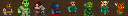

General info:
- All creatures can be milked twice as often as in vanilla.
- All poisonous/venomous creatures can be milked for their poison/venom.
- Many creatures give fleece when sheared, giving 3 units of cloth after spinning.
- Many creatures give pelts when butchered, giving furs after tanning.
- All animals give leather relative of their size. A cat gives 1, a oxen gives 7.
- All animals lay way, way less eggs.
Warlock Pets
Warlocks might have access to a few evil animals, like barghets and bone wolves, that they tamed in worldgen, but otherwise their list is rather short and very specific. Most of these you can not only embark with, but also create through custom workshops. You also have access to even more pets, even tame demons, by using summonings. These are explained in the workshop section at the fitting buildings.
:::  Pylon ::: Price: 26 ::: Pylon ::: Price: 26 :::
A control mechanism for skeletons. Every skeleton in line of sight for 25 tiles will get its speed increased by 250%. Usually skeletons are very slow. If you want to use them effectively, you need to strenghten your grip on them.
You can create new pylons from large gems and souls.
Special: High-end workshop allows overcharging them, adding a combat interaction to all pylons.

:::  Black Monolith::: Price: 26 ::: Black Monolith::: Price: 26 :::
A magical immobile creature, the monolith animates all corpses and bodyparts in its vicinity. It acts like a friendly necromancer in that regard.
Special: Animate corpse for line of sight, range 15.
:::  Mephit ::: Price: 101 ::: Mephit ::: Price: 101 :::
Small minions that can be farmed for scale or used in combat. They come in four types, air, fire, ice and acid, with different combat interaction. Fire mephits need special care, you dont want to set your surface on fire, do you?
Special: Fire breathes fire, Air paralyses, Acid causes pain and blisters, Ice throws ice spikes and freezes water.
:::  Animated Weapons::: Price: 51 ::: Animated Weapons::: Price: 51 :::
A good defense and offence, animated weapons are your best war animal. You can embark with bonemold versions, but later stages allow you to create steel and even above-steel versions. You have six types to choose from.
Special: Immune to most status effects and natural combat skills.
:::  Prisoner ::: Price: 41 :::
A hostage from another race. Mostly used for breeding and source of meat and bones. They also pull wagons and pack goods for caravans. You usually embark with 2 prisoners automatically.
Special: Can be created from raids.
Plump Helmet Men

- PHM can have between 1-10 children at a time, averaging 5 per female. If you're not careful, they may attain the majority so fast that you won't be able to bring down their numbers quickly enough.
- PHM will do a headcount of all non-PHM creatures in the immediate area. If they realize that they are the majority, they will rebel. It takes them about 1-2 weeks to figure out that they are the majority. This has no visible effect at first.
- A rebellious phase lasts for 1 week.
- Rebelling PHM will be intimidated by nearby creatures. They will usually not attack unless they outnumber their opponents.
- Rebelling PHM will not be intimidated by unconscious or sleeping creatures.
- Rebelling PHM can sometimes drain blood from sleeping creatures like vampires. This effect lasts for half a year after the rebellion actually starts.
- PHM cannot tell one species from another, but they can tell if the creature had been in a fight within the last year and did not run away. Creatures who fight can intimidate up to 5 PHM at once, so they will usually not be attacked unless they are greatly outnumbered.
- Once a group of PHM decide to attack, they do so by going berserk. Nearby creatures may be attacked even if they were not the actual target.
- Sometimes rebelling PHM will attack each other.
- Rebellious PHM living for a long time underground have a small chance of inflicting necrosis on themselves. This will generate miasma, causing bad thoughts.
- PHM can pick locks - forbidding doors will not control them.
- Rebellious PHM cannot be contained reliably by a far-off pasture, because they have a small chance of randomly going berserk.
- Trying to contain PHM behind walls to prevent gang attacks is a risky strategy - if they don't see any non-PHM creature for a while, they will rebel entirely and may rush the door the moment it is opened.
- Soldiers will not obey direct orders to kill a rebellious PHM that is now docile. However, they may choose to attack one on their own if it had been seen killing someone (the ones with names are the ones that made a kill).
- Killing rebellious PHM has a chance of starting a loyalty cascade.
- The best way of controlling PHM with limited dwarfpower is to pasture them nearby a major pathway, making sure that they can see all the dwarves that pass by. Large numbers of tame animals can also prevent PHM from rebelling. Separating them into small groups can help prevent attacks during a rebellion, as can the presence of guards that have been in combat. Or you could go the simplest method: just eat them!
|